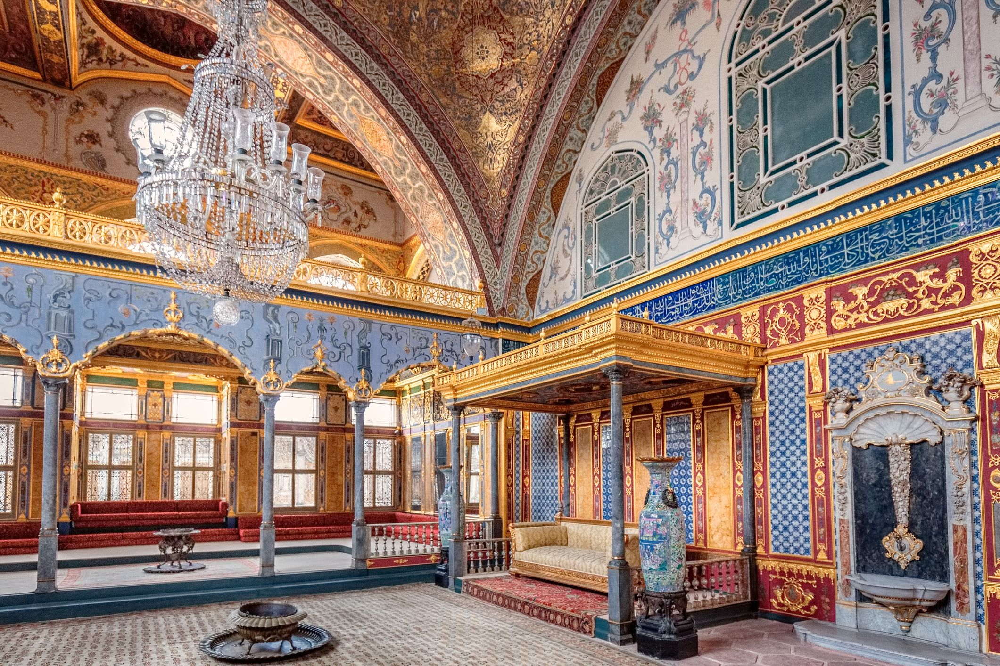
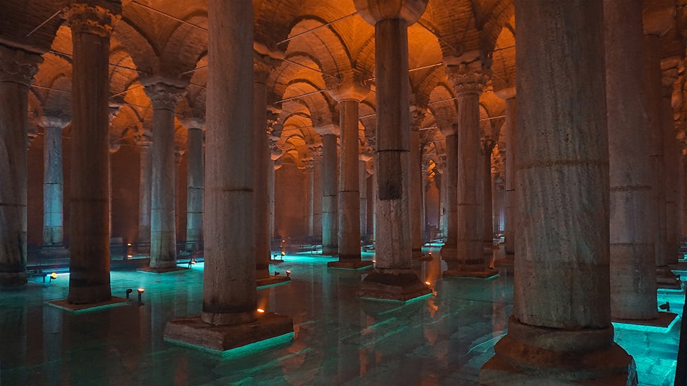

GIORNO 2
Palazzo Topkapi e Basilica Cisterna
|  |
Cari amici, oggi ci immergeremo nel fasto e nella magnificenza dell'Impero Ottomano con una visita al Palazzo Topkapi. Questo sontuoso complesso, che una volta fu residenza dei sultani ottomani, è una testimonianza vivente della grandezza e della ricchezza di questa civiltà. Attraverso le sue sale opulente e i suoi giardini incantevoli, avremo l'opportunità di rivivere i fasti dell'epoca ottomana e di scoprire i tesori nascosti custoditi al suo interno. |
|
Nel pomeriggio, ci avventureremo sotto terra per esplorare la Basilica Cisterna, un'antica cisterna sotterranea che risale all'epoca bizantina. Qui, tra le colonne imponenti e le atmosfere suggestive, ci immergeremo in un viaggio nel tempo alla scoperta dei segreti nascosti di questa meraviglia sotterranea, ammirando le opere d'arte e gli elementi architettonici che testimoniano la grandezza dell'antica Costantinopoli. |
 |